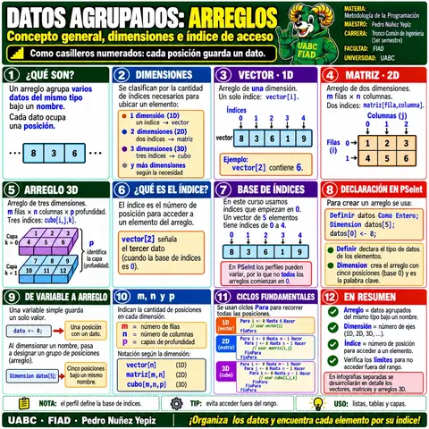
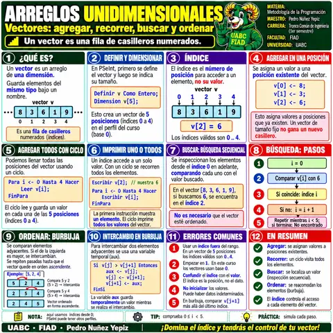
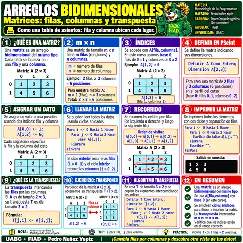
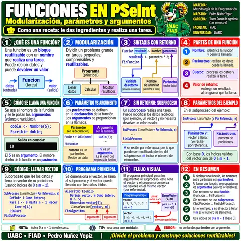
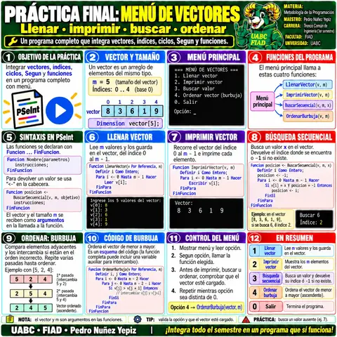

📊 Galería visual de la Unidad 5
La página carga miniaturas WebP ligeras. Al seleccionar una tarjeta, el visor abre la imagen WebP original de alta resolución con zoom, navegación y teclado.

1 · Datos agrupados
Conceptos de arreglos y organización de datos por dimensiones.

2 · Arreglos unidimensionales
Vectores, índices, recorrido, búsqueda y ordenación.

3 · Arreglos bidimensionales · Matrices
Renglones, columnas, llenado, recorrido y transpuesta.

4 · Funciones en PSeInt
Modularización mediante funciones, parámetros y retorno.

5 · Práctica final · Menú de vectores
Integración de funciones, búsqueda secuencial y ordenación burbuja.
💡
RECOMENDACIÓN
Revisa las infografías en el orden presentado y utiliza el zoom solo cuando necesites observar detalles del pseudocódigo, tablas o diagramas.
Revisa las infografías en el orden presentado y utiliza el zoom solo cuando necesites observar detalles del pseudocódigo, tablas o diagramas.